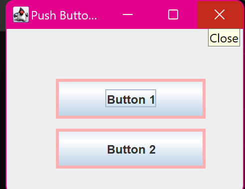

10. Java Program to Create and Set Border to Push Buttons
import javax.swing.JFrame;
import javax.swing.JButton;
import javax.swing.BorderFactory;
import javax.swing.border.Border;
import java.awt.Color;
class main {
public static void main(String[] args) {
JFrame frame = new JFrame("Push Button with Border Example");
// Create buttons
JButton button1 = new JButton("Button 1");
JButton button2 = new JButton("Button 2");
// Set the bounds for buttons
button1.setBounds(50, 50, 150, 40);
button2.setBounds(50, 100, 150, 40);
// Set borders for the buttons
Border border = BorderFactory.createLineBorder(Color.PINK, 3);
// Blue border with thickness of 3 pixels
button1.setBorder(border);
button2.setBorder(border);
// Add buttons to the frame
frame.add(button1);
frame.add(button2);
// Set frame properties
frame.setLayout(null);
frame.setSize(250, 200);
frame.setDefaultCloseOperation(JFrame.EXIT_ON_CLOSE);
frame.setVisible(true);
System.out.println("Program is ready to display buttons with
borders.");
}
}
